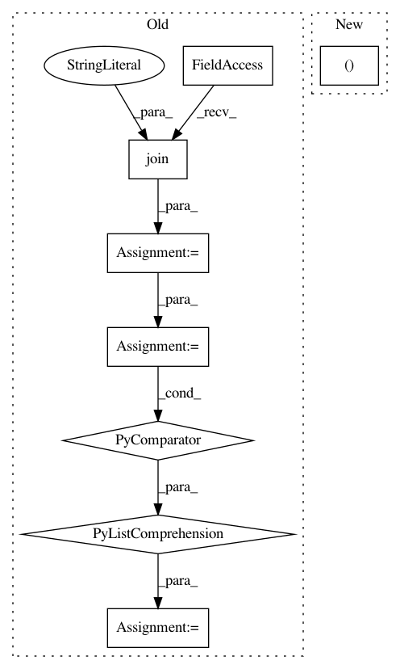

0134a038d242a57e765de9f7288b974ff72646f0,codes/data/LRHR_dataset.py,LRHRDataset,__init__,#LRHRDataset#,19
Before Change
elif self.data_type == "lmdb":
keys = pickle.load(open(osp.join(opt["dataroot_GT"], "_keys_cache.p"), "rb"))
self.paths_GT = sorted([key for key in keys if not key.endswith(".meta")])
keys = pickle.load(open(osp.join(opt["dataroot_LR"], "_keys_cache.p"), "rb"))
self.paths_LR = sorted([key for key in keys if not key.endswith(".meta")])
assert self.paths_GT, "Error: GT path is empty."
if self.paths_LR and self.paths_GT:
assert len(self.paths_LR) == len(self.paths_GT), \
"GT and LR datasets have different number of images - {}, {}.".format(\
After Change
self.opt = opt
self.data_type = self.opt["data_type"]
self.paths_LR, self.paths_GT = None, None
self.sizes_LR, self.sizes_GT = None, None
self.LR_env, self.GT_env = None, None // environment for lmdb
self.paths_GT, self.sizes_GT = util.get_image_paths(self.data_type, opt["dataroot_GT"])
In pattern: SUPERPATTERN
Frequency: 3
Non-data size: 8
Instances
Project Name: xinntao/BasicSR
Commit Name: 0134a038d242a57e765de9f7288b974ff72646f0
Time: 2019-06-02
Author: wxt1994@126.com
File Name: codes/data/LRHR_dataset.py
Class Name: LRHRDataset
Method Name: __init__
Project Name: DistrictDataLabs/yellowbrick
Commit Name: f25f858caeb07cb999e4088236b56bc5353b17bf
Time: 2019-08-02
Author: Kautumn06@users.noreply.github.com
File Name: docs/api/features/rfecv.py
Class Name:
Method Name: rfecv_credit_example
Project Name: astorfi/TensorFlow-World
Commit Name: 874382bfb96b92dcfdd6326ba83c54ad1e9d42f2
Time: 2017-06-26
Author: amirsina.torfi@gmail.com
File Name: codes/2-basics_in_machine_learning/linear_regression/code/linear_regression.py
Class Name:
Method Name: